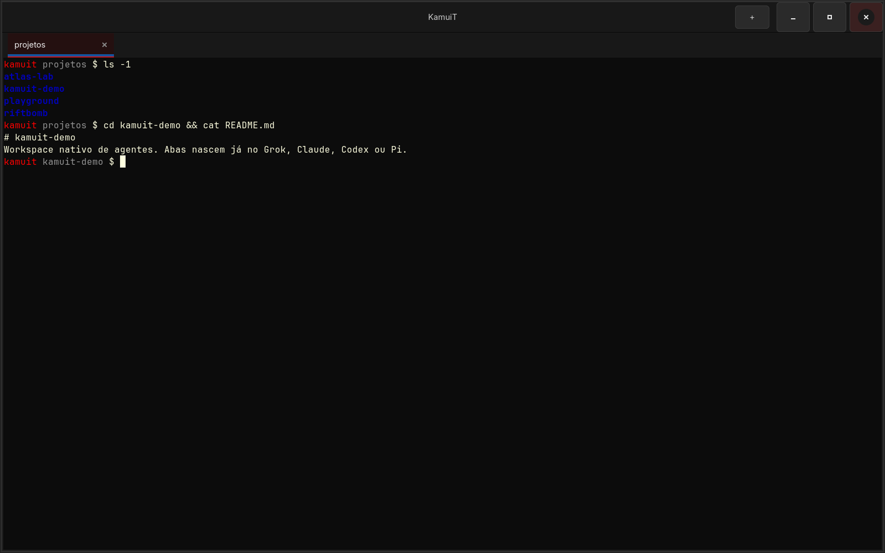
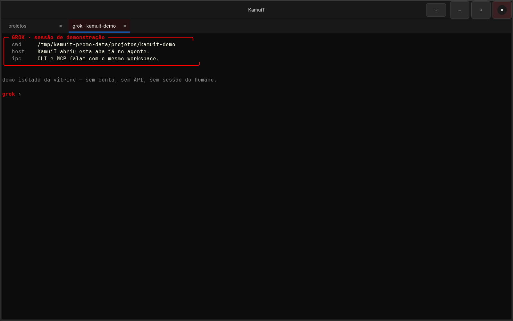
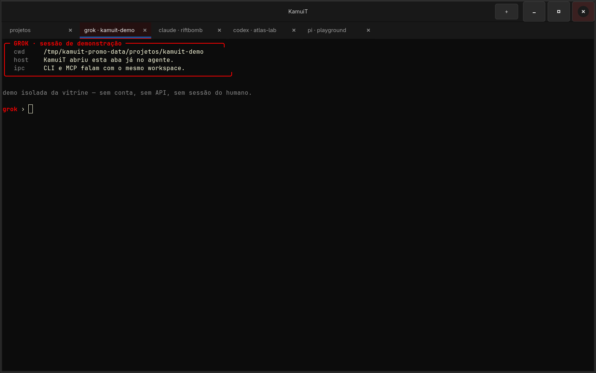
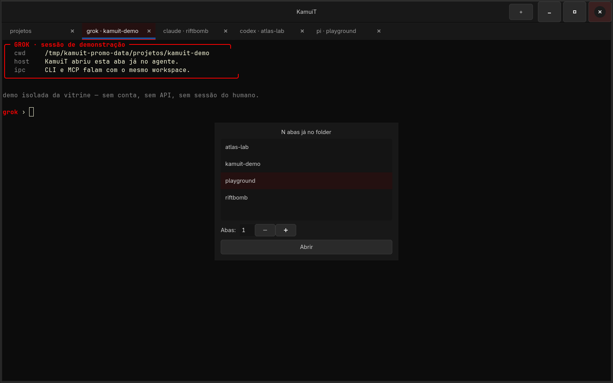
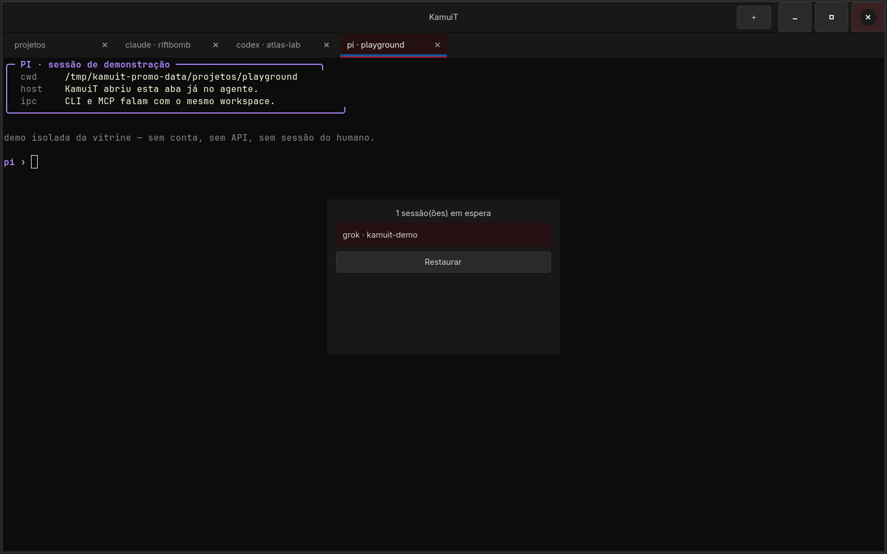

Workspace nativo · Grok Claude Codex Pi
KamuiT é o sucessor do TerminalDE: um workspace de terminais feito pra Grok, Claude, Codex e Pi. CLI e MCP falam com a janela viva. Windows e Linux.
App real, host Linux GTK 4 + VTE nesta máquina. Narração: Lucas Oliveira, OFICIAL #1. Sessões de agente da vitrine são isoladas, sem a conta do humano.
kamuit open grok abre a aba já no agente, no folder certo. Ctrl+Shift+G/C/D/P faz o mesmo pelo teclado.
JSON-lines no named pipe (Windows) ou no socket POSIX (Linux). A CLI e o MCP mandam open, type, list, limbo.
WPF + Windows Terminal core no Windows. GTK 4 + VTE no Linux. Mesma CLI, mesmos agentes.
O host segura as abas. O agente é um processo no PTY. Você manda comando de fora, ou aperta o atalho.
Uma janela. Single-instance: a segunda abertura só encaminha o comando.
kamuit open grok -C pasta -n 2 ou Ctrl+Shift+G. A aba já nasce lá.
Ctrl+Shift+O lista as pastas do root de projetos e abre N abas já no folder.
Ctrl+Shift+X esconde sem matar o PTY. Ctrl+Shift+L restaura. A sessão continua viva.
Capturas reais do host Linux nesta máquina, 15/09/2026. Fundo #0c0c0c, aba ativa com a linha vermelha.

A aba inicial já está no root de projetos. VTE no Linux, Windows Terminal core no Windows. Prompt e título acompanham o folder.

kamuit open grok -C kamuit-demo cria a aba com o título grok · kamuit-demo e o cwd certo. Sem colar o comando na mão.
KAMUIT_AGENT_BIN_DIR em demo/teste
Cada aba é um PTY. Ctrl+Tab circular. O som de ready toca no slot visual quando o agente avisa que terminou.
scripts/kamuit-mcp.mjs
Ctrl+Shift+O. Lista as pastas do root, escolhe quantas abas, abre já no folder. O root no Linux é ~/projetos (ou KAMUIT_PROJECTS_ROOT).

Esconde a aba sem matar o processo. A sessão continua no PTY. Ctrl+Shift+L traz de volta. Também existe op limbo no protocolo.
Host Linux GTK 4 + VTE nesta Omarchy, socket POSIX da instância de demonstração, 15/09/2026.
Ping p95 0,68 ms. Abrir aba p95 71 ms (cria a aba GTK, spawna o VTE). Medido com 30 pings e 8 open shell no socket da bancada kamuit-promo. Versão do binário: 0.3.0. Fonte: changelog 0.3.0 (04/09/2026) e esta medição.
KamuiT não quer ser o emulador mais rápido. Quer ser o workspace onde os agentes já moram.
| KamuiT | Windows Terminal | Warp | tmux | |
|---|---|---|---|---|
| Abas já no agente (Grok/Claude/Codex/Pi) | Sim. CLI, MCP e atalho. | Não no WT estável. Intelligent Terminal 0.1 (02/06/2026) é fork experimental. | Agente dentro do Warp, não o CLI que você já usa na aba. | Não. É multiplexer. |
| Windows e Linux | WPF+WT e GTK4+VTE, mesmo protocolo. | Windows 10/11. Sem Linux nativo. | App próprio, vários sistemas. | Unix-like. |
| CLI / MCP na janela viva | JSON-lines. 9 ops. | wt.exe abre perfis. Sem MCP de workspace de agentes. | Cloud agents e Warp Drive. Não é o teu Grok/Claude local. | tmux send-keys. Sem MCP, sem GUI. |
| Limbo (esconde sem matar o PTY) | Ctrl+Shift+X / op limbo. | Fecha a aba, mata o processo. | Não é o modelo. | Detach da sessão, outro problema. |
| Onde roda o agente | No teu PC, o binário que você já tem. | O que você lançar no perfil. | Agente Warp + créditos. Cloud conversation storage no plano pago. | O que você lançar no pane. |
| Preço | Grátis. Código no GitHub. | Grátis, MIT. | Free limitado; Build US$ 20/mês (página de preços em 15/09/2026). | Grátis, ISC. |
Fatos datados: KamuiT changelog 0.3.0, 04/09/2026 e medição local 15/09/2026. Windows Terminal: Wikipedia, estável v1.24.11911 em 16/07/2026; Intelligent Terminal 0.1 anunciado em 02/06/2026 como fork experimental. Warp: warp.dev/pricing coletado em 15/09/2026 (Free; Build a partir de US$ 20/mês; cloud conversation storage nos planos). tmux: Wikipedia, 3.7c em 17/08/2026, multiplexer ISC, não é GUI de agentes. Se algo mudou, abre um issue.
.NET 8 SDK. No Linux, GTK 4 e VTE gtk4. O atalho do Windows Search só atualiza depois do dotnet publish pra publish\.
# clone e publica o host GTK4+VTE git clone https://github.com/LucasOl1337/kamuit cd kamuit bash scripts/install-linux.sh # ou na unha dotnet publish linux/KamuiT.Linux.csproj -c Release -r linux-x64 -o publish-linux ./publish-linux/KamuiT kamuit open grok kamuit list
:: publica o app que o Start Menu abre dotnet publish -c Release -r win-x64 --self-contained false -o publish --nologo pwsh -File scripts\install-cli.ps1 pwsh -File scripts\install-shortcut.ps1 kamuit open grok kamuit open claude -C C:\Projetos\riftbomb -n 2
Ops: open, list, focus, type, close, show, ping, agents, limbo. MCP: scripts/kamuit-mcp.mjs. Atalhos: Ctrl+Shift+T shell · G/C/D/P agentes · O project pack · X limbo · L restaura.